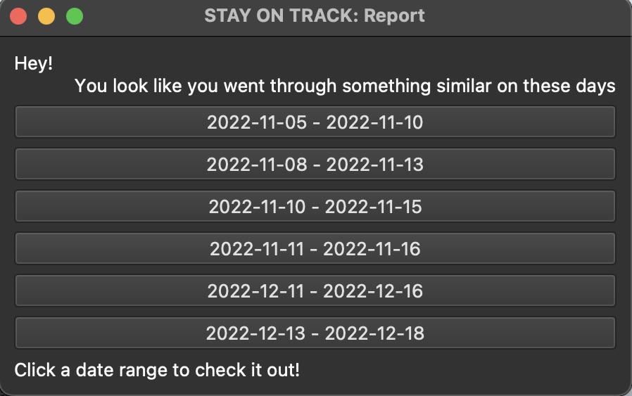
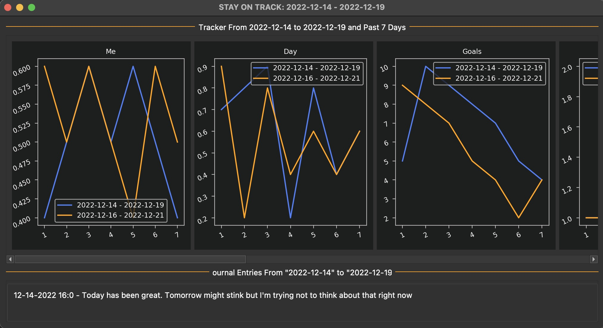

Stay On Track
Stay On Track is an app that lets you keep track of many aspects of your life.
Stay On Track loads with two trackers, Me and Day. Me is a numeric score for how you feel you did throughout the day. Day is a numeric score meant to grade the overall quality of the day, like your mood. The great thing about Stay On Track is that at any time, you can add new data to track. As long as the data can be numeric, you can create a new column in your database and track things like weight, steps, mindfulness minutes, or water consumption. The more variables you track, the more you can learn about yourself.
Because all your data is stored on an onboard SQLite database, you can access and analyze your own data at any time. If you don't know how to do that, you can use the automatic analysis tools included in Stay On Track. The app will report to you correlation scores for how your variables relate to your Me score and can tell you if you are making progress relative to your recent successes and failures. You can also look at your progress graphs, which give you a visual representation of the progress you have made with each tracked variable.
Stay On Track also provides a journal where you can enter any text you want and use the app to recall any entries from any day you used the feature. Your entries are only stored locally, so it is entirely private to your machine. Whether you choose to use this feature or not, journaling is an excellent way to understand yourself better.
After you have tracked your life for over 75 days, Stay On Track uses a KMeans clustering model to identify periods similar to the current time period. With Stay On Track, you can see when you went through a similar time in your life and look at journal entries you made during that period so you can learn from your past!
 Stay On Track uses a SQLite database to store your data which you always have access to. Your data is only saved on your computer, so no information is collected. We do recommend occasionally making backup copies of your data. Your data is stored in personal_data.db.
If you want to check out the app go here:
GitHub